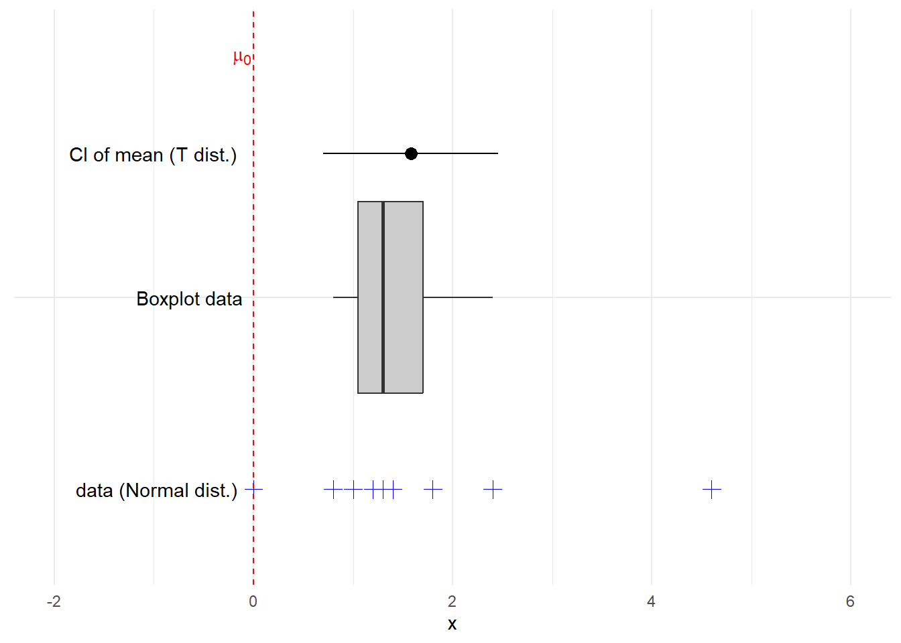
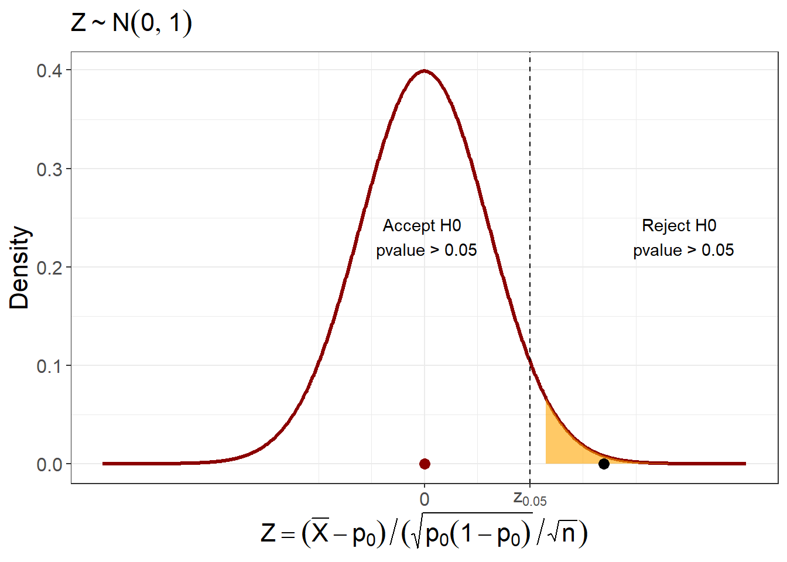
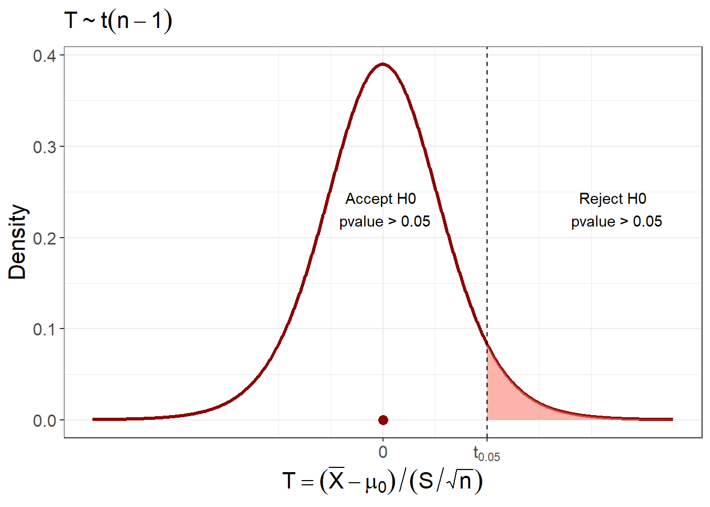

Chapter 14 Hypothesis Testing
When we perform an experiment, we often want to determine whether changes we introduce have a real effect. For instance, we might want to know if we can influence the outcome of the experiment, or whether a new condition alters the results in a meaningful way. Often, we already have expectations—based on prior knowledge—of how the data should behave when these new conditions are not present. But since the outcomes of experiments are subject to random variation in any case, how can we distinguish a real effect from random noise?
The strategy is to construct a probability model for the experiment and assess how the model’s parameters change under different conditions. We use random samples to estimate the parameters and by comparing the estimations under different conditions, we can decide whether the parameters shift in a way that provides evidence of a significant effect.
The key challenge is to determine whether the observed variation in the parameter estimation is genuinely due to the changes in conditions or simply a result of sampling variability.
In this chapter, we introduce the framework of hypothesis testing for means, proportions, and variances. We will define the null hypothesis (which assumes no change or effect) and the alternative hypothesis (which assumes a meaningful change). Using data, we will learn how to decide whether the evidence supports rejecting the null hypothesis in favor of the alternative.
Finally, we will discuss the types of errors that can occur in hypothesis testing—false positives (Type I errors) and false negatives (Type II errors)—and how they affect our conclusions.
14.1 Hypothesis formulation
Example (Lithium-ion (Li-ion) batteries)
Li-ion batteries are expected to play a pivotal role in supporting the global transition to clean energy and electrified transportation. Their performance, measured in discharged capacity (in milliampere-hours, mAh), is highly sensitive to storage conditions such as temperature and state of charge (SOC). The CALCE battery group systematically studied how different storage temperatures and SOC levels affect long-term battery degradation (Center for Advanced Life Cycle Engineering (CALCE) 2025).
The discharged capacity refers to the total amount of electric charge a battery can deliver during a full discharge cycle after being fully charged. For example, batteries stored fully charged for three weeks at 50°C show a discharged capacity of 1.561 mAh after being recharged. This raises a practical and important question:
Does storing the battery in a fully discharged state instead improve its discharged capacity after storage?
Or more broadly:
Should a battery be stored fully charged or fully discharged to minimize degradation over time?
We are interested in testing whether the mean discharged capacity of batteries stored fully discharged for three weeks differs from 1.561 mAh, after they have been fully recharged.
To answer this, we can formulate two mutually exclusive statements:
- The mean discharged capacity of the discharged-storage batteries is equal to 1.561 mAh
- The mean discharged capacity of the discharged-storage batteries is equal to 1.561 mAh
- The mean discharged capacity of the discharged-storage batteries is different from 1.561 mAh
Only one of these statements can be true. The goal of the experiment is to collect data and decide which of the two better reflects the behavior of the batteries.
It is important to note that due to natural variability, some individual batteries may show capacities greater than 1.561 mAh, and some lower. The key question is about the mean performance of the group, not individual observations.
Let \(\mu\) represent the mean discharged capacity of batteries stored fully discharged. Then, the above statements can be reformulated as statistical hypotheses:
- \(H_0: \mu = 1.561\,\text{mAh}\) (null hypothesis)
- \(H_1: \mu \neq 1.561\,\text{mAh}\) (alternative hypothesis)
Here, \(H_0\) assumes no effect of storage condition—that is, fully discharged storage results in the same capacity as fully charged storage. In contrast, \(H_1\) suggests that the storage condition does influence the battery’s performance. These two statements constitute the basis for hypothesis testing.
Definition
In statistics, a statement (conjecture) about the probability function of a random variable is called a hypothesis.
The hypothesis is usually written in two dichotomous statements
The null hypothesis \(H_0\): when the conjecture is false. It usually refers to the status quo. The data may be explained by the status quo.
The alternative hypothesis \(H_1\): when the conjecture is true. It usually refers to research hypothesis. The data may be explained by the alternative to the status quo.
Example (Fertilizer)
What are the null and the alternative hypothesis for the following situation?
Fertilizer developers want to test whether their new product has a real effect on the growth of plants.
Being \(\mu_0\) the mean growth of the plants without fertilizer (known) and \(\mu\) the mean growth of the plants with the fertilizer (unknown)
- \(H_0:\mu \leq \mu_0\) (The fertilizer may do nothing: status quo)
- \(H_1:\mu > \mu_0\) (The fertilizer may have the desired effect: research interest)
Example (Chemotherapy)
Pharmaceutical companies need to know if a novel chemotherapy can cure 90% of cancer patients.
Being \(p_0\) the proportion of patients that are cured without the chemotherapy (known) and \(p\) the proportion that are cures with the chemotherapy (unknown)
- \(H_0:p \leq p_0\) (The chemotherapy may do nothing: status quo)
- \(H_1: p > p_0\) (The chemotherapy may have the desired effect: research interest)
Note that our new improved experiment has the parameter \(p\) and we want to know how it compares to the experiment without any additional improvement that has the parameter \(p_0\).
We want to decide between \(H_0\) and \(H_1\). There are two options:
We reject the alternative hypothesis \(H_1\); that is, we accept the null hypothesis \(H_0\).
We accept the alternative hypothesis \(H_1\) (our interest); that is, we reject the null hypothesis \(H_0\).
Example (Li-ion Batteries)
Suppose we want to store Li-ion batteries but are unsure whether to store them fully charged or fully discharged to minimize long-term degradation.
To address this, we formulate a hypothesis test:
- \(H_0: \mu = 1.561\,\text{mAh}\). The mean discharge capacity is the same whether batteries are stored fully charged or fully discharged.
- \(H_1: \mu \neq 1.561\,\text{mAh}\). The mean discharge capacity differs when batteries are stored fully discharged compared to fully charged.
To decide between \(H_0\) and \(H_1\), we measure the discharge capacity of 12 batteries that were stored fully discharged for three weeks.

From the data, the average discharge capacity of the 12 batteries stored fully discharged is
\(\bar{x} = 1.569232\) mAh. At first glance, this might suggest that storing batteries discharged reduces degradation compared to storing them fully charged.
However, we must consider that \(\bar{x}\) is the result of a random sample and may vary. Sometimes it will be higher than 1.561mAh, and sometimes lower. Therefore, the observation \(\bar{x} \ne 1.561\) is not, by itself, sufficient evidence to reject \(H_0\).
This leads us to ask:
If \(H_0\) is true, what range of values would we typically expect for \(\bar{x}\), based on a sample of 12 batteries?
In other words, is \(\bar{x} = 1.569232\) a typical result, assuming the expected value of the new experiment is indeed 1.561 mAh?
To answer this, we need a formal decision process, which we introduce in the following sections.
14.2 Hypothesis Testing
Let us summarize the different cases, methods, and types of hypothesis testing. We will then discuss each case using a specific example.
Hypotheses can be tested — or decided upon — using confidence intervals. Therefore, we will focus on the same cases we encountered when constructing confidence intervals, namely:
- Hypothesis test for the mean \(\mu\), when \(X \sim N(\mu, \sigma^2)\)
- Hypothesis test for the proportion \(p\), when \(X \sim \text{Bernoulli}(p)\) and both \(np > 5\) and \(n(1-p) > 5\)
- Hypothesis test for the variance \(\sigma^2\), when \(X \sim N(\mu, \sigma^2)\)
There are three methods for testing hypotheses:
- Using confidence intervals
- Using a rejection region
- Using a p-value
All three methods are mathematically equivalent and lead to the same decision.
Finally, there are three types of hypothesis tests:
- Two-tailed test
- Upper-tailed test
- Lower-tailed test
14.3 Hypothesis testing for the mean
A tow tailed hypothesis contrast is of the form
- \(H_0:\mu = \mu_0\) (status quo)
- \(H_1:\mu \neq \mu_0\) (research interest)
This is called two tailed because the alternative hypothesis \(H_1\) requires that the mean \(\mu\) of the new experiment is either lower or higher than the mean \(\mu_0\) of the old experiment, or gold standard. This hypothesis can be tested in different cases. For these hypothesis we will assume that \(X\) is a normal variable.
14.3.1 Hypothesis test with a confidence interval
Remember that the confidence interval at \(95\%\) for the mean is
\[(l,u)=(\bar{x}-t_{0.025, n-1} \frac{s}{\sqrt{n}},\bar{x}+t_{0.025, n-1} \frac{s}{\sqrt{n}})\]
when the outcomes of the random experiment distribute normally \(X\sim N(\mu, \sigma^2)\).
Testing Criteria:
We can have only two options:
- If the confidence interval contains the null hypothesis \(\mu_0\):
\[\mu_0\in (l,u)\] then we accept \(H_0\) with \(95\%\) confidence. We do not know where the mean the experiment under the new conditions is but we are confident that it is within the confidence interval. Since \(\mu_0\) is within the interval we cannot discard that \(\mu_0\) is the expected value of our experiment. We then say that the data could have been produced by the old experiment, rendering the new conditions irrelevant.
- If the confidence interval does not contain the null hypothesis\[\mu_0\notin (l,u)\] then we reject \(H_0\) with \(95\%\) confidence. Since we are confident that the mean of the new experiment is within the interval and \(\mu_0\) is not within it, then we can discard that the mean is \(\mu_0\). We then say that the data could not have been produced by the old experiment, rendering the new conditions meaningful.
Example (Li-ion Batteries)
Twelve fully discharged Li-ion batteries were stored for three weeks, then they were re-charged and their discharged capacity was measured
1.5681, 1.5578, 1.572, 1.5637, 1.5769, 1.5627, 1.5757, 1.5782, 1.5806, 1.5645, 1.5484, 1.5821
From the histogram of the data we see that we can assume that the discharge capacity distributes normally

Therefore, we can compute the confidence interval for the mean \(\mu\) of this sample
\[(l,u)= (1.562, 1.575)\] The confidence interval tells us that we trust with \(95\%\) confidence that the \(\mu\) is in the interval. We don not know the true value of \(\mu\) but we see that \(\mu_0=1.561\) is not in it.
\[\mu_0\notin (1.562, 1.575)\]
our conclusion is to reject that \(H_0\) could have produced our observed interval. We also say that the data supports the research question that storing discharged batteries prevents their deterioration. More technically, we say that we do not reject \(H_0\).

14.3.2 Hypothesis test with acceptance/rejection zones
An equivalent way to test the hypothesis is to see if our set of observations are either common or rare if we assume that the null hypothesis is true. Let us remember the hypothesis contrast
- \(H_0:\mu = \mu_0\) (status quo)
- \(H_1:\mu \neq \mu_0\) (research interest)
To test the hypothesis with a rejection zone we compute the standardized statistic
\[T=\frac{\bar{X}-\mu_0}{\frac{S}{\sqrt{n}}}\] when the null hypothesis is true. This is the standardized error that we will make if we estimate \(\mu_0\) with the average \(\bar{X}\) of the experiment under the new conditions.
Note that we are standardizing with respect to \(\mu_0\) (the null hypothesis). Remember that the interval
\[(-t_{0.025, n-1}, t_{0.025, n-1})\] defines the most common values of \(T\) since they capture \(95\%\) of the probability ouf the outcomes of T
\[P(-t_{0.025, n-1} \leq T \leq t_{0.025, n-1})=0.95\]
Testing criteria:
- If the observed statistics \(t_{obs}\) under the null hypothesis is in the acceptance region
\[t_{obs}=\frac{\bar{x}-\mu_0}{\frac{s}{\sqrt{n}}} \in (-t_{0.025, n-1}, t_{0.025, n-1})\] we accept \(H_0\) with \(95\%\) confidence. In this case, the observed error that we make when we estimate \(\mu_0\) by \(\bar{x}\) is a typical sampling error.
The interval \((-t_{0.025, n-1}, t_{0.025, n-1})\) is called acceptance interval of \(H_0\) at \(95\%\) confidence level.
- If the observed statistics \(t_{obs}\) under the null hypothesis is not in the acceptance region
\[t_{obs} \notin (-t_{0.025, n-1}, t_{0.025, n-1})\] then we reject \(H_0\) with \(95\%\) confidence. In this case, the observed error that we make when we estimate \(\mu_0\) by \(\bar{x}\) is too large for sampling error, and therefore the assumption that the null hypothesis was true does not hold.
The region \((-t_{0.025, n-1}] \cup[t_{0.025, n-1})\) is called the rejection zone.

Example (Li-ion Batteries)
To test whether storing discharged batteries is better than storing them fully charged, we calculate the the standardized error that we make when we estimate \(\mu_0\) with \(\bar{X}\)
\[t_{obs}=\frac{\bar{x}-\mu_0}{\frac{s}{\sqrt{n}}}=2.7921 \notin (-t_{0.025, n-1}=-2.20, t_{0.025, n-1}=2.20)\] Think of this regions as a region of tolerance for the error. Because our observation is not within, we have enough evidence to distrust the that the changing the storage conditions is irrelevant. We conclude that our observed average is not a typical observation of \(\bar{x}\) when the null hypothesis \(\mu_0\) is true. Therefore, we again reject that the data is consistent \(H_0\) and say that we have evidence that support the notion that storing discharged batteries is better.
14.3.3 Hypothesis test with a P-value
We can also contrast the two tail hypothesis by calculating the probability that the average of another sample from the null hypothesis will be even rarer than the average we just observed. We define the \(pvalue\) as
\[pvalue = P(T \leq -t_{obs}) + P(t_{obs} \geq T) = 2 (1-F(|t_{obs}|))\]
That is the probability that if we were to we take another sample of the same size from the null hypothesis, we are able to obtain at least the error that we observed. If our observed error is rare for the null hypothesis then this probability value will be small.
Testing criteria:
- If the observed \(pvalue\) is
\[pvalue \geq \alpha =1-0.95=0.05\]
then we accept the null hypothesis \(H_0\) with \(95\%\) confidence.
- If the observed \(pvalue\) is
\[pvalue < \alpha =1-0.95=0.05\]
then we reject \(H_0\) and accept our research question with \(5\%\) significance level.
\(\alpha\) is the significance level. It gives us how much of the distribution we are leaving out, and defines the region that we consider estimation errors to be beyond the tolerance of the null hypothesis.
Remember: We always trust our data. If the null hypothesis says that our data is a rare observation we then distrust the null hypothesis, and reject it.
Example (Li-ion Batteries)
Let us think that the average \(\bar{x}=1.569232\) could be achieved by batteries that were stored fully charged. Perhaps, we were lucky and select a sample made of good batteries with high discharge capacity, no matter the storage conditions. If that is so then how lucky were we? For our data the observed statistic was \(t_{obs}=2.7921\) and its p-value is
\[pvalue=2\times (1-F(2.7921))=0.017\]
Python:
2*(1- t.sf(2.7921, df=11))
R:
2*(1- pt(2.7921, 11))

We conclude that if we test \(12\) batteries and store them fully charged, it is unlikely to obtain an average discharge capacity this far from the \(1.561mAh\). Only about \(1\%\) of fully charged battery samples will get this far. Since this probability is lower than our tolerance, or significance level \(alpha=0.05\), again conclude that storing discharged batteries is a better option.
The entire analysis in Python and R can be done with the following code
Python:
from scipy import stats
data = [1.5681, 1.5578, 1.572, 1.5637, 1.5769,
1.5627, 1.5757, 1.5782, 1.5806, 1.5645,
1.5484, 1.5821]
stats.ttest_1samp(data, popmean=1.561)
R:
x <- c(1.5681, 1.5578, 1.572, 1.5637, 1.5769,
1.5627, 1.5757, 1.5782, 1.5806, 1.5645,
1.5484, 1.5821)
t.test(observaciones, mu=1.561)14.3.4 Upper tail hypothesis
We may be interested in only testing for the fact that our experiment’s mean has a higher mean than the null hypothesis’ mean.
The upper-tailed test is
- \(H_0:\mu \leq \mu\). The new conditions of the experiment have a mean that is at most the null hypothesis mean.
- \(H_1:\mu > \mu\). The new conditions of the experiment have a mean that is higher the null hypothesis mean.
This is called upper-tailed test because the alternative hypothesis \(H_1\) requires that the mean \(\mu\) is higher than \(\mu_0\). The testing criteria are the same as those for the two tail hypothesis.
Testing criteria:
- Confidence interval: If the upper-tailed confidence interval contains the null hypothesis
\[\mu_0\in (l,u)=(\bar{x}-t_{0.05} \frac{s}{\sqrt{n}}, \infty)\]
where \(t_{0.05, n-1}=F^{-1}(0.95)=\)t.ppf(1-0.05, df=n-1), then we accept \(H_0\) with \(95\%\) confidence. Otherwise we reject it.
Note that this test is from the point of view of the data, we are not centering the confidence interval around \(\bar{x}\), instead we are leaving all the \(5\%\) of the rare errors to the left of the average. We are, therefore, asking if \(\mu_0\) is significant lower than the average.
- Rejection/acceptance region: If the observed statistics \(t_{obs}\) under the null hypothesis is in the acceptance region
\[t_{obs}=\frac{\bar{x}-\mu_0}{\frac{s}{\sqrt{n}}} \in (-\infty, t_{0.05, n-1})\]
then we accept \(H_0\) with \(95\%\) confidence. Otherwise, we reject it.
Note that this test is from the point of view of the null hypothesis. We are leaving all the \(5\%\) of the rare errors to the right of the null hypothesis and therefore ask if the average is significantly higher than \(\mu_0\).
- \(pvalue\): If the observed upper-tailed \[pvalue= 1-F(t_{obs})\]
1-t.cdf(zobs, df=n-1) is greater than \(\alpha=1-0.95=0.05\)
\[pvalue \geq \alpha =0.05\]
then we accept \(H_0\) with \(95\%\) confidence. Otherwise we reject it. Note that this test is again from the point of view of the null hypothesis. We are asking: if we were to take another average from sampling the experiments of the null hypothesis, what is the probability that it will be higher than the observed one?
Example (Li-ion Batteries)
In the example of the Li-ion batteries, we may be interested to test whether storage discharged batteries improves discharge capacity. Therefore, the upper-tailed hypothesis is
- \(H_0:\mu \leq 1.561\) (storing discharged batteries is at most as good as storing them fully charged)
- \(H_1:\mu > 1.561\) (storing discharged batteries is better then storing them fully charged: research interest)
We will test the higher tail of the distribution. For the data that we discussed before, we then reject \(H_0\) at \(95\%\) confidence because of any of the three equivalent contrasts:
- The upper tailed confidence interval does not contain the null hypothesis \(\mu_0=1.561\)
\[\mu_0=1.561 \notin (\bar{x}-t_{0.05, n-1} \frac{s}{\sqrt{n}}, \infty)=(1.563937, \infty)\]
where \(t_{0.05, n-1}=\)t.ppf(0.95, 11)= 1.795885
- We have that the acceptance region for \(H_0\) is:
\[(-\infty, t_{0.05, n-1})=( -\infty, 1.795885)\]
and that the observed standardized error is not in the region \[t_{obs} = \frac{1.569232-1.561}{\frac{0.01}{\sqrt{12}}}=2.7921 \notin ( -\infty, 1.795885)\]
- The upper tail \(pvalue\) is lower than \(\alpha=0.05\) \[pvalue=1-F(2.7921)=0.0087 <0.05\]
where \(pvalue=\)t.sf(2.7921, 11).
The hypothesis test is performed in Python and R like
Python:
from scipy import stats
data = [1.5681, 1.5578, 1.572, 1.5637, 1.5769,
1.5627, 1.5757, 1.5782, 1.5806, 1.5645,
1.5484, 1.5821]
stats.ttest_1samp(data, popmean=1.561, alternative='greater')
R:
x <- c(1.5681, 1.5578, 1.572, 1.5637, 1.5769,
1.5627, 1.5757, 1.5782, 1.5806, 1.5645,
1.5484, 1.5821)
t.test(observaciones, mu=1.561, alternative="greater")We then conclude that evidence show that storing battering fully discharge improves discharge capacity.

14.3.5 Paired t-test
Example (Gosset’s Soporific)
In some cases, we are not sure about the numerical value of a parameter under the null hypothesis, but we know that we want to improve the value of a parameter in two different conditions.
In the famous 1908 paper of Gosset, titled “The probable error of the mean”, were he proposed the \(T\) statistics (Student 1908), he analyzed the soporific effect of the hyoscyamine hydrobromide. It was already known at the time that the change of the structural configuration from dextro (deviating polarized light to the right) to leaevo (deviating polarized light to the left) of the molecule would hchange its biological effect. To test the differences
- Ten individuals were given the dextro version of the molecule and wrote down the additional hours slept under this treatment
0.7, -1.6, -0.2, -1.2, -0.1, 3.4, 3.7, 0.8, 0, 2
with average \(0.75\)
- The same 10 individuals were given the laevo version of the molecule and wrote down the additional hours slept under this treatment 1.9, 0.8, 1.1, 0.1, -0.1, 4.4, 5.5, 1.6, 4.6, 3.4
with average \(2.33\)
The scientific hypothesis was that the laevo version of the molecule was better than the dextro one. For each individual, Gosset computed the difference between the treatments. Taking \(X\) as the difference between treatments, this was the sample observed for \(X\)
1.2, 2.4, 1.3, 1.3, 0, 1, 1.8, 0.8, 4.6, 1.4
The average hours gained by laevo with respect to dextro was \(1.58\), and its standard deviation \(s=1.229995\).
The scientific question can be stated as upper-tailed paired t-test:
- \(H_0:\mu \leq 0\) (no treatment difference: \(\mu_2-\mu_1=0\))
- \(H_1:\mu > 0\) (treatment 2-laeveo have higher gains in sleeping hours than treatment 1-dextro: \(\mu_2-\mu_1>0\))
Where \(\mu\) is the mean of the differences between treatments, and the null hypothesis states that there is no difference.
If we suppose that \(X\) is normal, the standardized error that we make when we estimate the null difference \(\mu_0=0\) by the average of the differences is
\[T=\frac{\bar{X}}{\frac{S}{\sqrt{n}}}\]
and its observation
\[t_{obs}=\frac{\bar{x}}{\frac{s}{\sqrt{n}}}\] which is also known as the signal to noise ratio.
we can test the hypothesis for the difference \(X=treatmet_1-treatment_2\) using a upper tailed test which give us
\[\bar{x}=1.58\] and \[pvalue=0.0014\] This is obtained from the following code in Python and R
Python:
from scipy import stats
x = [1.2, 2.4, 1.3, 1.3, 0,
1, 1.8, 0.8, 4.6, 1.4]
stats.ttest_1samp(x, popmean=0, alternative='greater')
R:
x <- c(1.2, 2.4, 1.3, 1.3, 0,
1, 1.8, 0.8, 4.6, 1.4)
t.test(x, mean=0, alternative="greater") Gosset therefore observed a significant increase in \(1.58\) hours of sleep between laevo and dextro-hyoscyamine hydrobromide. We thus reject that the difference between soporific means is \(0\) or that their means are equal. Equivalently, we can test the hypothesis using a paired t-test, where we introduce the observation for each separate condition, and state that the observations are paired.
Python:
from scipy import stats
medicine1 <- [0.7, -1.6, -0.2, -1.2, -0.1,
3.4, 3.7, 0.8, 0, 2]
medicine2 <- [1.9, 0.8, 1.1, 0.1, -0.1,
4.4, 5.5, 1.6, 4.6, 3.4]
stats.ttest_rel(medicine2, medicine1, alternative='greater')
R:
medicine1 <- c(0.7,-1.6,-0.2,-1.2,-0.1,3.4,3.7,0.8,0,2)
medicine2 <- c(1.9,0.8,1.1,0.1,-0.1,4.4,5.5,1.6,4.6,3.4)
t.test(medicine2, medicine1, alternative="greater", paired = TRUE) The experiment not only confirmed the biological consequences of isomers but it was the first ever cross-over design of a clinical trial. Gosset thus designed and used a statistical tool with key consequences in the analysis and design of pharmacological experiments, among others.
In the following plot, we show all the statistical elements for this example. In red, we show the null hypothesis of no difference between treatments. The \(95\%\) confidence interval for the difference is shown in the upper part. The CI does not contain the null. In the second row, we see the data represented in a box plot. At the bottom row, we see the raw data, that is the individual observations for the change in hours for each patient.

14.3.6 Lower tail hypothesis
Example (NaCl)
When \(11.6g\) of NaCl is dissolved in \(100 g\) of water it has a molar concentration of \(1.92 mol/L\). Imagine we design a process to remove salt from this concentration and obtain the following results
1.716, 1.889, 1.783, 1.849, 1.891
If we are interested only in the case that we are able to remove salt from the concentration then we rather propose a lower tail hypothesis.
The lower tail hypothesis are of the form
\(H_0:\mu \geq \mu_0\). The new conditions of the experiment give an expectation that is at most as the initial one -status quo.
\(H_1:\mu < \mu_0\). The new conditions of the experiment give an expectation that is lower than the initial one -research interest
Testing criteria:
Note that the lower tail is given by the alternative \(H_1\). We want to test that the average concentration after the process is lower than the initial concentration. The contrast criteria are the same as for the other types of hypothesis. For this type of hypothesis, we will accept the null hypothesis if
\(\mu_0\) is in the confidence interval: \[\mu_0\in (l,u)=(-\infty, \bar{x}+t_{0.05,n-1} \frac{s}{\sqrt{n}})\]
or, \(t_{obs}\) is in the aceptance region:
\[t_{obs}\in (t_{0.05,n-1}, \infty)\]
- or, the \(pvalue\) on the lower tail of the distribution.
\[pvalue=F_t(t_{obs},n-1)\] is higher than \(\alpha=0.05\)
In any other case, we reject \(H_0\) and accept the alternative hypothesis.
Example(NaCl)
If we are efficient at removing salt then we would like to provide evidence for the alternative lower tail hypothesis.
- \(H_0:\mu \geq 1.92\) (null)
- \(H_1:\mu < 1.92\) (alternative)
We can assume that the concentration is normal. Therefore, we only need to change the “alternative” argument to “less” in the t-test functions
Python:
from scipy import stats
data = [1.716, 1.889, 1.783, 1.849, 1.891]
stats.ttest_1samp(data, popmean=1.92, alternative='less')
R:
x <- c(1.716, 1.889, 1.783, 1.849, 1.891)
t.test(x, mu=1.92, alternative="less")We see that the expected value of the null hypothesis \(\mu_0=1.92\) is not within the \(95\%\) lower-tail confidence interval \((-\infty, 1.897376)\), and that the \(pvalue=0.002\) is lower than the significance level \(\alpha=0.05\). Therefore, we can reject the null hypothesis and say that our eveidence support the alternative, meaning that the prototipe is able to exctract salt from the mix.
If we compare result with that of the two tail test, we will see that the \(pvalue\) is reduced in half, and therefore we have more confidence in rejecting the lower tail hypothesis than the two-sided hypothesis.
Hypothesis Testing with Large \(n\) and Any Distribution
On many occasions, \(X\) is not normally distributed, but if we can take large samples (\(n \ge 30\)), then we can use the Central Limit Theorem (CLT). The CLT tells us that the sampling distribution of the sample mean \(\bar{X}\) is approximately normal, regardless of the distribution of \(X\), provided \(X\) has finite variance.
The standardized error from the null hypothesis can then be approximated by a standard normal distribution:
\[ Z = \frac{\bar{X} - \mu_0}{\frac{\sigma}{\sqrt{n}}} \approx N(0, 1) \]
If the population standard deviation \(\sigma\) is unknown, we replace it with the sample standard deviation \(S\), and use the t-statistic:
\[ T = \frac{\bar{X} - \mu_0}{\frac{S}{\sqrt{n}}} \sim t_{n-1} \]
For large \(n\), the t-distribution approaches the standard normal distribution, so we may approximate:
\[ T \approx N(0, 1) \quad \text{for large } n \]
Note: The use of the normal approximation for the \(T\)-statistic is common when \(n \ge 30\), but strictly speaking, the statistic follows a \(t\)-distribution with \(n-1\) degrees of freedom.
14.4 Hypothesis testing for the proportion
If our random experiment is a Bernoulli trial \(X \sim Bernoulli(p)\), we can formulate hypothesis contrasts for the probability \(p\) of an event in the trial, or the proportion. Consider an upper tailed hypothesis
- \(H_0: p \leq p_0\) (status quo)
- \(H_1: p> p_0\) (research interest)
In this case, we test a hypothesis for the proportion if
- \(X\) is a Bernoulli trial, and
- \(np\), \(n(1-p)\) are both greater than \(5\), so we can apply the central limit theorem.
Remember that if we take a the sample of \(n\) Bernoulli trials \((1,0,1,...0)\), \[\bar{X}=\frac{1}{n}\sum_{i=1}^n X_i\] is the relative frequency for the number of ‘’ones’’ obtained in the sample. This is an estimator of \(p\).
If we assume that the null hypothesis is true then \(X \sim Bernoulli(p_0)\) and the standardized error that we make when we estimate \(p_0\) with \(\bar{X}\) is
\[Z=\frac{\bar{X}-p_0}{\frac{\sqrt{p_0(1-p_0)}}{\sqrt{n}}} \sim N(0,1)\]
\(\sigma=\sqrt{p_0(1-p_0)}\) is the standard deviation of \(X\) when the null hypothesis is true. Remeber that \(V(X)=\sigma^2=p_0(1-p_0)\). With this \(Z\) statistic, we can accept or reject the null hypothesis using any of the three testing criteria.
Example (Process Improvement)
We may be satisfied with a new process if \(90\%\) of the times we improve the previous process. If we run a sample of \(200\) new processes and find that \(188\) times we improved the old process. This makes a relative frequency of \(0.94\) or we managed to improve the process \(94%\) of the times. Can we be satisfied with the new process at \(95\%\) confidence?
To answer this questions, we can formulate an upper-tailed hypothesis contrast for the null hypothesis \(p_0=0.9\). Therefore, the null and alternative hypotheses are
- \(H_0: p \leq p_0=0.9\) (The new process is not satisfactory to the requires reliability: status quo)
- \(H_1: p> p_0=0.9\) (The new process improves the older one reliably: research interest)
We assume that if the null hypothesis is true then
- The probability model of a random experiment is
\[X \sim Bernoulli (p_0)\] 2. and check that when \(np_0=180>5\) and \(n(1-p_0)=20>5\)
Therefore, we can apply the test for the proportions.
We can use any of the three criteria to test the hypothesis. For this example, we believe that have a satisfactory process because, we reject \(H_0\) at \(95\%\) following
- The upper tail confidence interval for the \(p\) does not include \(p_0\)
\(p_0=0.9 \notin (\bar{x}-z_{0.05}\big[\frac{p_0(1-p_0)}{n} \big]^{1/2},1)= (0.905,1)\)
- The observed standardized error from the null is not in the acceptance region
\[z_{obs}= \frac{\bar{X}-p_0}{\big[\frac{p_0(1-p_0)}{n} \big]^{1/2}} =\frac{0.94-0.90}{\sqrt{0.00045}}=1.88563 \notin (-\infty, z_{0.05})=(-\infty, 1.644)\]
- The upper tail \(pvalue\) is lower than \(\alpha=0.05\):
\[pvalue=1-\Phi(1.885618)=0.02967323<0.05\]
Python:
1-norm.cdf(1.885618)
R:
1-pnorm(1.885618)
The test can be performed in Python and R using the code
Python:
from statsmodels.stats.proportion import proportions_ztest
proportions_ztest(188, 200, value=0.9, alternative='larger')
R:
prop.test(188, 200, p=0.9, alternative="greater", correct = FALSE)14.5 Hypothesis Testing for the Variance
In many cases, experiments are run to test the dispersion of data. Such as, when complying with strict design standards where measurements must be between certain values. Or when different treatments are applied to different groups, we want to see the dispersion of outcomes between the groups. Also the dispersion of the data may be a property that offer important insights into the system under study.
A tow tailed hypothesis contrast for the variance is of the form
- \(H_0:\sigma = \sigma_0\) (status quo)
- \(H_1:\sigma \neq \sigma_0\) (research interest)
This hypothesis for \(\sigma\), or equivalently for \(\sigma^2\), can be tested when the random variable \(X\) is a normally distributed.
Remember that if we take a random sample \[S^2=\frac{1}{n-1}\sum_{i=1}^n (X_i-\bar{X})^2\] is the sample variance. This is an unbiased and consistent estimator of \(\sigma^2\).
If we assume that the null hypothesis is true and \(X \sim N(\mu, \sigma_0)\) then the error ratio that we make when we estimate \(\sigma^2\) with \(s^2\) is
\[W=\frac{(n-1)S^2}{\sigma_0^2}\]
Note that when \(W=n-1\), we make no error. \(W\) follows a \(\chi^2\) (chi-squared) distribution with \(n-1\) degrees of freedom.
\[W \sim \chi^2(n-1)\]
With the observation of \(W\), we can accept or reject the null hypothesis using any of the three testing criteria.
Example (Hart Rate Variability)
The heart rate, as measured by an electrocardiogram (ECG), shows a distinct periodic pattern, with the peak signal corresponding to the R-wave of the QRS complex. However, the periodicity of the hart rate is not exact. In fact, heart rates that get close to perfect periodicity is bad news. The lack of variability in the intervals between successive R-peaks—known as RR intervals—is indicative of cardiac dysfunction and is a known predictor of mortality. Conversely, high variability in the heart rate is associated with better cardiovascular health. The fractal and nonlinear complexity of this variability is the focus of ongoing research in cardiology, as it reflects the dynamic interplay of autonomic regulation and physiological adaptability.
Irurzun and colleagues measured RR intervals by 24 hour Holter monitoring on 147 healthy patients to determine RR change at different ages and between sexes(Irurzun et al. 2021). Patient “00” was, for instance, a 53 year old male with the following distribution of pre-processed RR values during waking hours in milliseconds.

The sample variance of the patient is \(s^2=8029.751\). The expected RR healthy variability of a 53 year is \(\sigma^2_0=8000ms\), according to the reference Framingham Heart Study. Is patient “00” within the range of the expected value of healthy RR variability and a suitable candidate for the study?
We therefore want to contrast the two tailed tail hypotheses
- \(H_0:\sigma^2 \leq \sigma_0^2=8000\) (Patient has a very normal RR variability)
- \(H_1:\sigma^2 \neq \sigma_0^2=8000\) (Patient has a RR variability different than the expected value)
Let us test the hypothesis using the acceptance region.
The contrast statistics is \[W=\frac{(n-1)S^2}{\sigma_0^2} \sim \chi^2(n-1)\]
and the threshold limit \(\alpha=0.05\). Therefore, the acceptance region \(P(\chi^2_{0.975,2999} \leq W\leq \chi^2_{0.025,29999})=0.95\) is
\[(\chi^2_{0.975,2999}, \chi^2_{0.025,2999})=(2849.11,3152.678)\]
Python:
chi2.ppf(0.975,19)
chi2.ppf(0.025,19)
R:
qchisq(0.025, 2999)
qchisq(0.975, 2999)
For our data, the observed standardized error ratio is:
\[w_{obs}=\frac{2999 \times8029.751}{8000}=3010.153\]
which falls within the acceptance region
\[w_{obs}=3010.153\in (2849.11,3152.678)\]
and therefore we do not reject the null hypothesis and conclude that RR data of patient “00” supports that he has a very normal RR variability.

The \(95\%\) CI interval for his RR variance is
\((l,u) = (\frac{s^2 (n-1)}{\chi^2_{0.025,n-1}},\frac{s^2(n-1)}{\chi^2_{0.975,n-1}})\) \[( 7902.782, 8159.819)\]
which clearly contains the expected value \(\sigma^2_0=8000\) for his age and sex. This patient, has a RR variance that it is very close to the expected variance measured as a gold reference in a large population sample. The healthy range, contrasted with clinical data, is, however, much larger \((3600, 14400)ms^2\). Obtaining a RR variance within the specified interval provides reassurance that the patient is healthy, supporting the decision to be included in the study.
14.6 Errors in hypothesis testing
The result of an upper tail hypothesis test may be to reject the null hypothesis:
\[H_0: \mu\leq\mu_0\]
when \(H_0\) is actually true. In the case of the batteries, we rejected the null hypothesis that the discharge capacity of stored batteries will not change if they were stored fully charged or discharged. Data made us believe that storing discharged batteries was better and can recommend this type of storage.
We must bear in mind that the decisions are based on the data. It may well be that the observed statistic has fallen, by chance, far from the null hypothesis, in the rejection zone of \(H_0\) even when this hypothesis is true. The statistic is a random variable and one observation can have a large value by chance.
In our experiment, we selected, without knowing, batteries that had a previously high discharge capacity in any condition. Larger than the null \(\mu_0=1.561\). If the selection error is systematic we call it selection bias.
Another possible source of the error could be that the type of batteries that we are testing do not have a discharge capacity of \(\mu_0=1.561\) when fully charged. They have a higher discharged capacity equal to that when they are stored fully discharged. The null hypothesis is badly represented by \(\mu_0\), which we really do not know in our experiment. We need a control group to assess it. A solution is to test the same battery in two different conditions, randomly prescribed, and perform a paired test. In the case that the first test influences the outcome of second test on the same specimen, two random samples of each condition can be taken and its difference compared.
When we perform the hypothesis test, we do not know if \(H_0\) is true. Let us imagine that we found by other means that \(H_0\) is really true. The probability of rejecting the truth (\(H_0\)) is precisely the level of statistical significance \(\alpha\). We call this probability the probability of making a type 1 error. Taking an upper tailed hypothesis test for the mean at significance level \(5\%\), we have that the probability that the standardized error falls in the rejection zone is
\[\alpha = P(Z> t_{0.05, n-1})=0.05\]

A type 1 error is also called a false positive because our research interest is in \(H_1\). When we reject \(H_0\), we accept \(H_1\) and say that our test is positive. Accepting \(H_1\) translates to announcing a discovery, so the type 1 error is announcing a discovery that is not true: we falsely claimed a discovery because the data suggested it, we were fooled by it.
There is another type of error. The result of an upper tail hypothesis test can be accepting the null hypothesis:
\[H_0: \mu\leq\mu_0\]
when this is not true. Again for the batteries, imagine now that our data made us accept that the changing conditions of the batteries do not affect their discharged capacity (\(H_0\)) when actually it does. We chose by chance batteries that had already a lower discharged capacity no matter the condition.
In this case, it may be that the observed random error fell, due to randomness, close to the null hypothesis, in the acceptance zone of \(H_0\), when really \(H_1\) is true. If we found out somehow that, for example, \(\mu\) really does have a value of \(\mu_1\) (blue dot in the plot) then the alternative hypothesis would be exactly:
\[H_1: \mu=\mu_1\]

If \(H_1\) is indeed true (blue line, which we do not know when we perform the hypothesis test) then the statistic is really a random variable \(Y\) that has mean
\[E(Y)=\frac{\mu_1-\mu_0}{\frac{s}{\sqrt{n}}}\]
and most of them will fall close to this value, therefore, in the rejection area of \(H_0\), validating the hypothesis test. However, there are cases in which the observed statistic falls within the acceptance zone of \(H_0\) due to randomness (in the blue shaded area), despite the fact that the statistics are produced by \(H_1\). In these cases we accept \(H_0\) when it is not true. This error is called a type 2 error or a false negative. Since our research interest is in \(H_1\) we failed to accept it. rejecting \(H_1\) translates to discarding a discovery, so the type 2 error is ignoring a discovery that is actually true.
For an upper tailed test for the mean and a significance level \(\alpha\) this probability is
\[\beta= P(Y < t_{0.05, n-1})\] Where \(Y \sim T(n-1, ncp=\frac{\mu_1-\mu_0}{s/\sqrt{n}})\) is the true distribution of the observed statistics, and corresponds to a t-distributions shifted to the right by the parameter \(ncp\). We also say that the statistical power of the test is \(1-\beta\).
Example (Power Calculation of Gossets’ Soporifics)
The results of pre-clinical findings, like those of Gosset, would require extensive validation to be approved for clinical use. A clinical trial, aimed to validate an effect, needs to compute the statistical power expected to reject the null to be approved. Imagine we aim to validate Gossets experiments, replicating his findings. The hypotheses that we want to contrast are
- \(H_0 : \mu = 0\) (no soporific difference between treatments)
- \(H_1 : \mu > 0\) (higher soporific effect of the laevo isomer than the dextro one)
and prove that the mean difference between treatments is positive on \(100\) patients, with a statistical significance level of \(5\%\). Assuming the values of the previous Gosset’s study that suggested that the difference between the means was \(\mu=\mu_1=1.58\) hours and \(\sigma=1.23\) hours, what is the type 2 error we should expect if we repeat Gosset’s experiment using a sample size of \(100\) patients?
The probability of accepting the null hypothesis is
\[\alpha = P(T> t_{0.05, 100-1})=0.05\]
where \(t_{0.05, 99}\)t.ppf(1-0.05, 99)\(=1.66\). The type 2 error is therefore
\[\beta= P(Y > 1.66)\]
that is, the probability of accepting that the laevo version of the molecule does not produce higher soporific effects that the dexo one, when in fact it does. For the upper tailed test for the mean, the observed statistics actually distributes as
\[Y \sim T(100-1, ncp=\frac{1.58}{1.23/\sqrt{10}}= 4.06)\] and the type 2 error is
\[\beta = F_{t(n-1, ncp)}(4.06)=0.008\]
Python:
nct.cdf(1.66, 99, ncp=12.84553)
R:
pt(1.66, 99, ncp=12.84553)Therefore, if were were to repeat Gosset’s experiment using \(100\) patients an infinite amount of times, only \(\alpha=5\%\) of the times we would announce that the laevo molecule is more soporific than the dextro one when it really is not, while \(\beta=0.8\%\) of the times we would announce that we do no see a difference when there is one. In this case, the statistical power to detect a biological effect of changing the molecule’s chirality is \(1-\beta=0.991\) or \(99.1\%\).
When designing an experiment is customary to fix the power at \(80\%\) and then compute the sample size \(n\) required to achieve this power. For Gosset’s experiment, the effect is so strong that with only \(4\) patients we will achieve a statistical power of \(80\%\).
14.6.1 Sensitivity and Specificity
When we carry out a hypothesis test we have two possibilities for each condition:
- \(H_1\) is actually : true (\(\mu=\mu_1\)) or false (\(\mu=\mu_0\)).
We also have two outcomes of the hypothesis test:
- The test for \(H_1\) is: positive (\(t_{obs}\) in the acceptance zone of \(H_1\)) or negative (\(t_{obs}\) in the acceptance zone of \(H_0\)).
Example (PCR)
We do a PCR to test for an infection. The hypothesis test is
- \(H_0\) no infection
- \(H_1\) there is infection
We do the PCR test and it gives us
- negative: we reject the infection (\(H_1\))
- positive: we accept the infection (\(H_1\))
We can write the contingency table for the probabilities of the results of the hypothesis test as
| \(H_1\) is true | \(H_1\) is false | |
|---|---|---|
| The test on \(H_1\) is positive | \(1-\beta\) | \(\alpha\) |
| The test on \(H_1\) is negative | \(\beta\) | \(1-\alpha\) |
| sum | 1 | 1 |
we therefore have
- The type 2 error rate: probability of a false negative (ignore a finding when it is true)
\[\beta=P(negative|H_1)\]
The True positive rate: This is the power or sensitivity of a test (claiming a discovery when it is true, the main objective) \[1-\beta=P(positive|H_1)\]
The Type 1 error rate: probability of a false positive (state a discovery when it is false) \[\alpha=P(positive|H_0)\]
The True Negative rate: This is the specificity of a test (ignore a finding when it is false) \[1-\alpha=P(negative|H_0)\]
14.7 Exercises
14.7.0.1 Exercise 1
Imagine we take a random sample of size \(n = 41\) of a normal random variable \(X\), and find that the sample average is \(10\) and the sample variance is \(1.5\).
- What is then the confidence interval for the mean of \(X\) at \(95\%\) confidence level?
Consider that \(t_{0.025,40}=\) t.ppf(0.975, 40) \(\sim 2\).
Test the hypothesis that the mean of \(X\) is different than \(10.5\), using a \(5\%\) significance threshold.
Write the code to calculate the P-value to test the hypothesis that the mean of \(\mu\) is lower than \(10.5\), using a \(5\%\) significance threshold.
Consider that the code for the T probability distribution with \(n-1\) degrees of freedom is t.cdf(tobs, n-1).
14.7.0.2 Exercise 2
\(10\) gas condensates showed the following concentrations of mercury (in \(ng/ml\)):
\(23.3\), \(22.5\), \(21.9\), \(21.5\), \(19.9\), \(21.3\), \(21.7\), \(23.8\), \(22.6\), \(24.7\)
Assuming that the mercury concentration is distributed normally across gas condensates, test the hypothesis that condensate does not surpass the toxicity limit established at \(24 ng/ml\).
14.8 Practice
Load misophonia data https://alejandro-isglobal.github.io/SDA/data/data_0.txt
We have four measures of anxiety:
- Trait: ansiedad.rasgo (are you an anxious person?) continuous:0-100
- State: ansiedad.estado (are you currently feeling anxious?) continuous:0-100
- Diagnosed: ansiedad.medicada (have you been diagnosed with an anxiety disorder?) binary (si, no)
- Excess: ansiedad.dif (difference between State and Trait)
We are interested in the variable misofonia.dif, that is the observed excess of anxiety from the trait
\(excess = state - trait\)
Test the following hypotheses
Is excess in anxiety different from 0? is it higher?
Is excess in anxiety higher than 0 for men and women separately?
Is the proportion of anxious patients different from \(0.03\)?